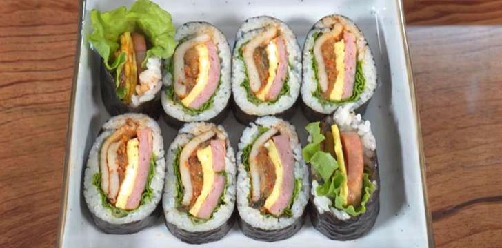

오늘 읽을만한 글
주제별로 분류된 다양한 글 모음
673개의 글 |
관심주제 설정
| 자동차 | 웹툰 | 경제 | 추천/구독 | 레시피 | 리빙 | 책방 | 패션뷰티 |
|---|

[푸드클래스] 김밀란 셰프
먹물과 한치로 만드는 스파게티 한 그릇
맛의 균형을 잡아 느끼하지 않도록
토마토 페이스트가 숨은 맛 포인트
#이탈리아요리 #먹물파스타
먹물과 한치로 만드는 스파게티 한 그릇
맛의 균형을 잡아 느끼하지 않도록
토마토 페이스트가 숨은 맛 포인트
#이탈리아요리 #먹물파스타
